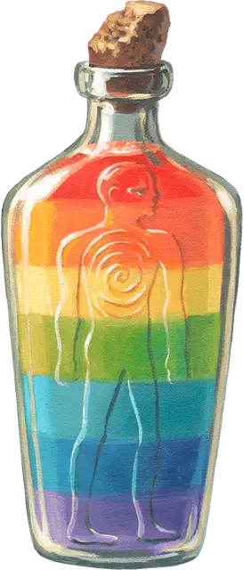

Зелье многоцветности
Potion of Polychromy
Зелье, необычное

Рекомендованная стоимость 101-500 зм
Выпив это зелье, вы и всё, что вы несёте и носите, приобретёт изменчивый оттенок всевозможных цветов на 1 час. В течение это времени вы можете бонусным действием поменять палитру цветов на любую на ваш выбор. Если вы мимикрируете под оттенки окружающей среды, то они постоянно меняются в соответствии с обстановкой, и вы совершаете проверки Ловкости (Скрытность) с преимуществом, пока не измените цвет или эффект зелья не перестанет действовать.
Зелье расслаивается на семь ярких полос несмешивающихся жидкостей и напоминает на вкус сироп.